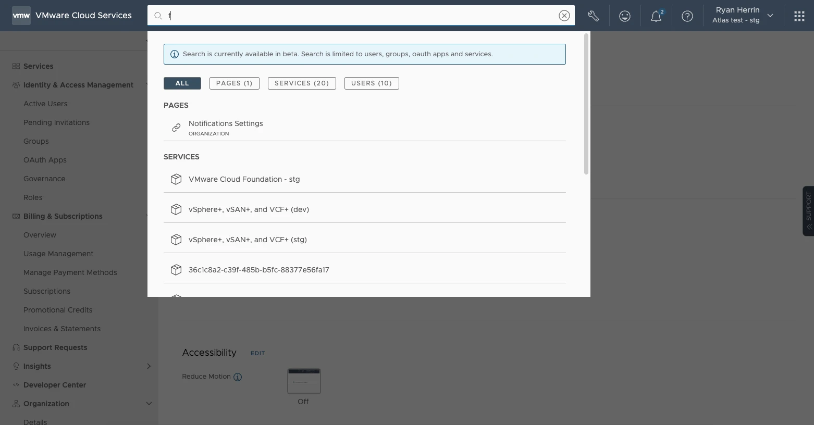
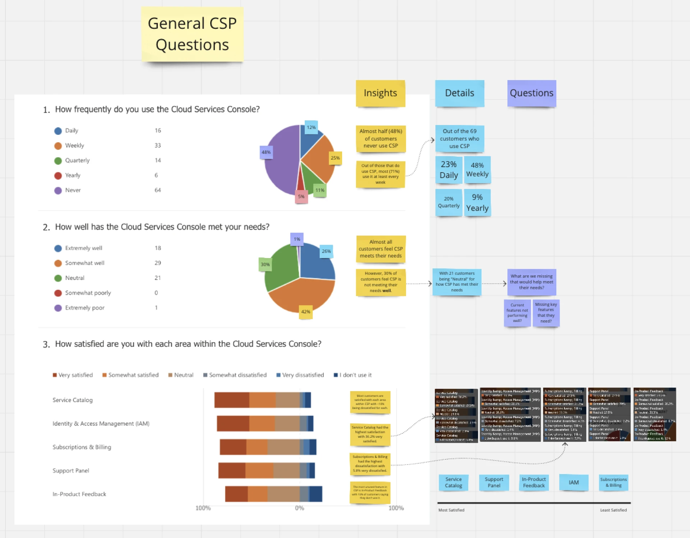
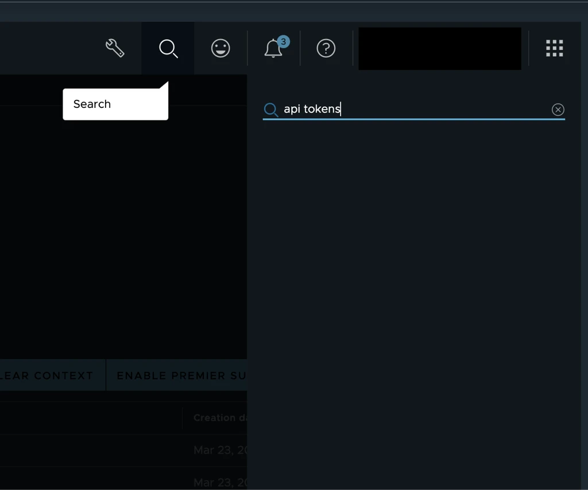
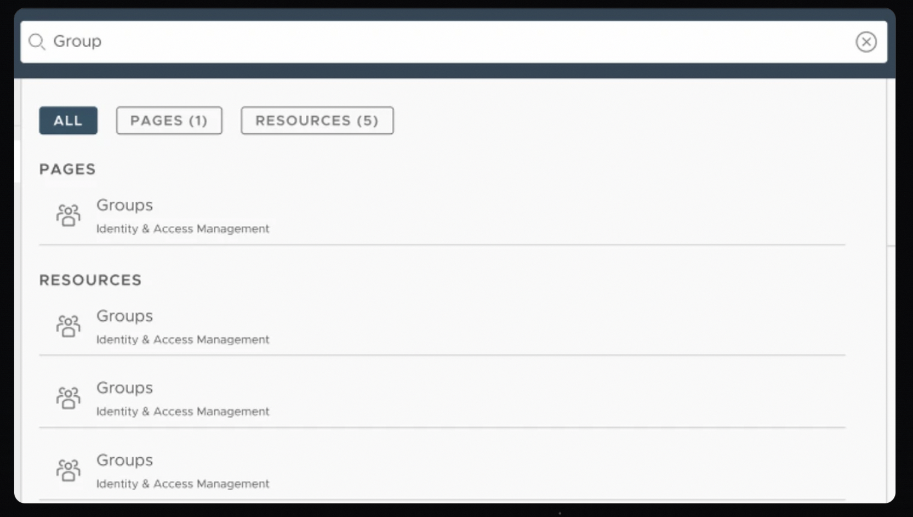
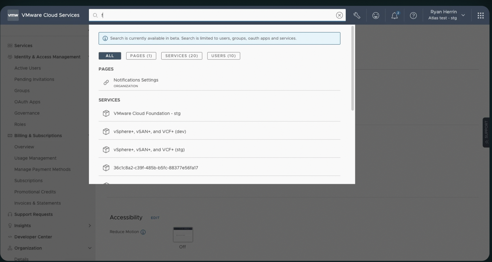

New users get lost the second they land in VMware’s cloud console. Global Search finds their way back.

VMware’s cloud ecosystem is a pile of separate services and consoles, and there was no way to search across any of it. New users got lost immediately: everything required already knowing where to look.
I ran competitive analysis on how peer companies handled search, then built a proof of concept inside the Cloud Services Console to see if the idea actually held up before anyone committed more time to it.
A survey a month after launch told me who to bring in for usability testing next, and confirmed I was solving the right problem. Three pieces of that below.
Confirming the problem before designing the fix.
The working theory was that new users felt lost, but a theory isn't enough to justify the build. So I ran a survey a month after the proof of concept launched, and it confirmed the theory, then went further than I expected: 76% of customers wanted results pulled from every service, not just whichever console they happened to be in, and 89% said search would be the thing they used most.
Nobody was asked about resource management directly. Multiple customers brought it up anyway, unprompted, in their own words: they wanted one place to manage everything instead of a separate login for every service.

“I would be able to quickly and easily find the resources and information I need without having to browse through different menus and pages.”
The faster option wasn't the right one.
Two options were on the table. A side panel would've shipped faster, since it leaned on infrastructure that already existed. A centered search bar meant more work, but it gave results room to breathe and matched a pattern people already knew from using search literally everywhere else.
I pushed for the centered bar. Familiarity was the whole point: new users were already lost, and the last thing they needed was an unfamiliar interaction to learn on top of that.


A proof of concept that did more than prove the concept.
The POC was enough to get stakeholders to commit. It also did something I didn't expect: it settled an internal disagreement about priorities, and helped shift the roadmap toward resource management instead of away from it.
Over 100 customers signed up to keep testing with us afterward, on a feature they'd only seen as a proof of concept. That's the number that told me VMware's services could feel like one product instead of a pile of separate ones.
